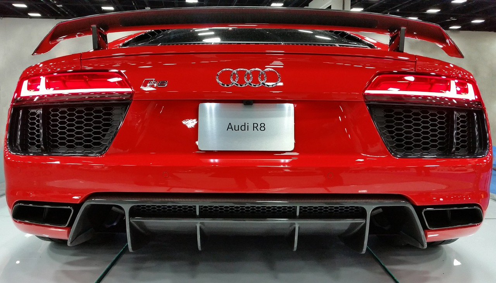

Audi - The Epitome of German Engineering Excellence Audi, a brand synonymous with luxury, innovation, and performance, has consistently held a prominent position in the world of automotive excellence. Founded in 1909, this German automaker has earned a reputation for crafting vehicles that seamlessly blend cutting-edge technology with a timeless commitment to quality.
Audi's racing heritage is embedded in the DNA of every car they produce. From the sporty Audi S and RS models to the elegant A series, Audi vehicles offer a wide range of performance options to cater to diverse driving preferences. These vehicles provide exhilarating acceleration, precise handling, and a refined driving experience.
Safety is paramount at Audi. The brand consistently receives top safety ratings and incorporates the latest driver-assistance technologies to keep you and your passengers secure. Audi vehicles are built to last, exemplifying German engineering reliability.
Audi vehicles are admired for their timeless and sophisticated design. Their signature Singleframe grille, distinctive LED lighting, and sleek, aerodynamic shapes make Audi cars instantly recognizable and classically stylish.
Contact usFor more car details
gmail:classiccars@gmail.com